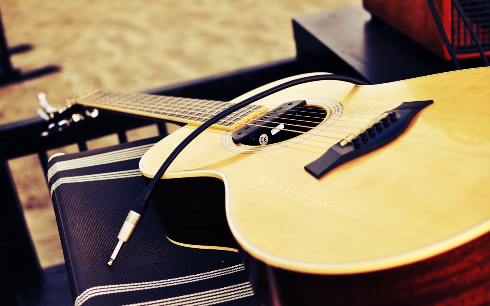
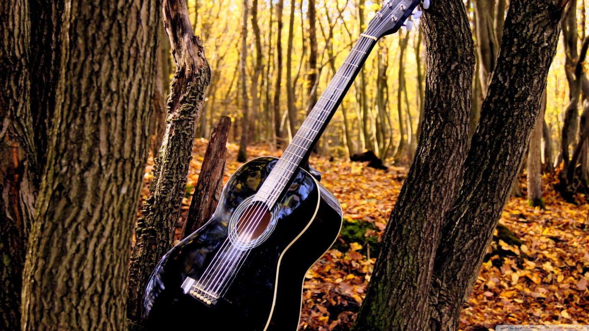

Easy Guitar Lessons
Guitar is something that attracts people now a days and if one try to learn it, it can be easily learned from my website. There are some easy tutorials to learn guitar.
Some Beautiful Images of Guitar..
 
Brief Discription of the guitars shown above


Go Up